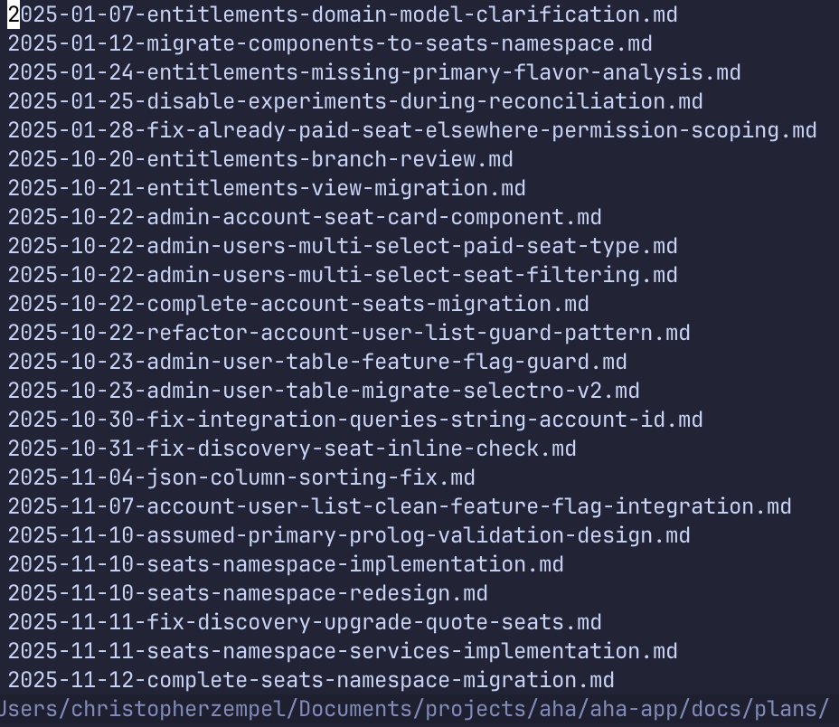

(Claude) Skills
The ceiling keeps moving.
🔐 Steganography Library
Python → Rust • ~20% more resilient
Weekend project, part-time effort
I know nothing about steganography.
I don't know Zig, or anything about game programming.

The Fond
Here's what made this possible...
In cooking, the browned bits left on the pan. Concentrated flavor. Throwing them away is waste.
Every AI session leaves fond behind.
Patterns. Decisions. Lessons.
Learn to deglaze.
Durable Plans
❌ Problem
Your plan lives in the session.
Session crashes → context lost → start over.
✅ Solution
write-plan skill → docs/plans/

Plans accumulate. Never overwrite.
Conversations
❌ Problem
Claude discards your conversations.
They're full of decisions, context, approaches.
✅ Solution
episodic-memory skill
Local SQLite + vector DB. Query by task or semantic search.
github.com/obra/episodic-memory
Your conversations become searchable memory.
Deglaze
Harvest the fond.
What you have:
- What you tried
- How it went
- What AI missed
- Code review feedback
- PM feedback
- (potentially) Sentry errors
Codify into:
- AGENTS.md — repo guidance
- Skills — reusable workflows
- Commands — common tasks
Extract knowledge. Use the system to improve the system.
The Workflow
And here's the system that makes this easy. Free.
Prompt:
"Using your writing plans skill, implement a plan for..."
Automatic. Quality gates at every step.
Higher quality work. Code that actually works.
/plugin marketplace add obra/superpowers-marketplace
/plugin install superpowers@superpowers-marketplace
Reduce
Good skills take time.
Great skills involve strong editing and discussion.
v1
v2
v3
v4+
3-5 conversations per version.
3-5 versions before genuinely good.
One thing I wish I'd done earlier:
Keep release notes per skill. Track what changed and why.
Continual improvement. The skill gets better. So do you.
Accumulate. Don't overwrite.
📁 docs/plans/
Start a directory today.
Plans. Conversations. Skill drafts.
🔧 github.com/obra/superpowers
All the skills I mentioned.
write-plan, episodic-memory, TDD, and more.
Questions? Happy to pair on building your first skill.